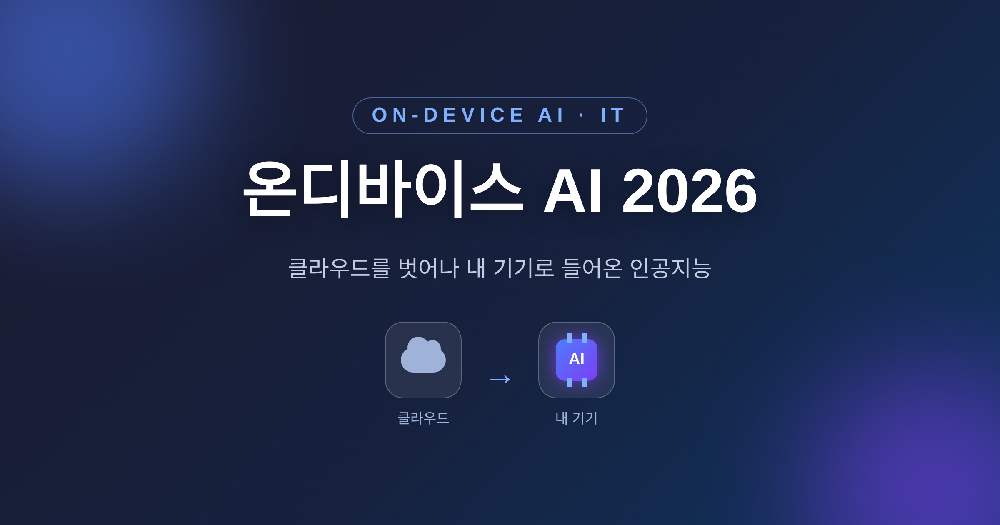
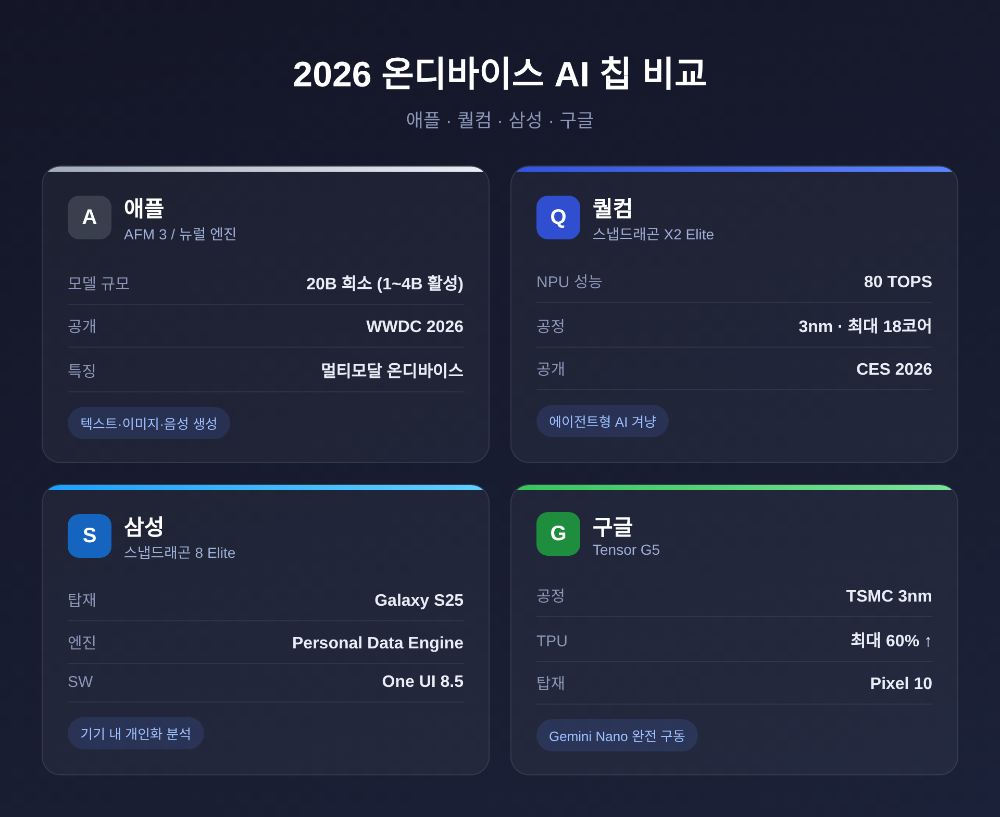
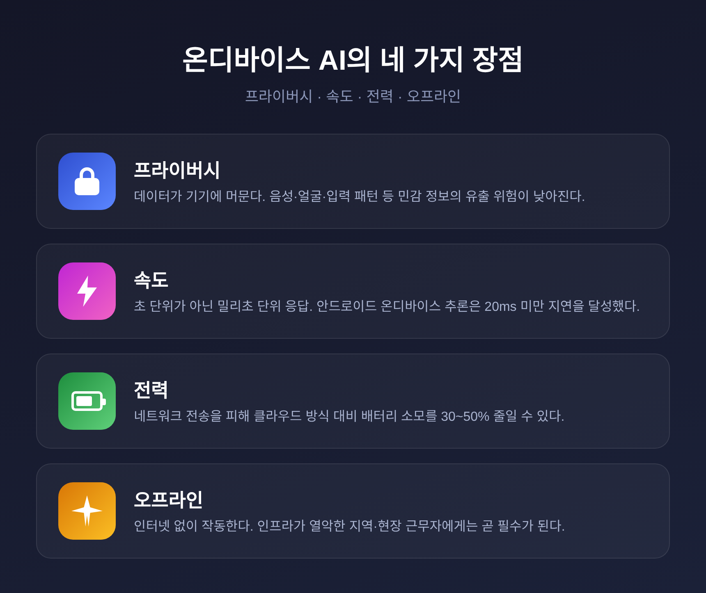

온디바이스 AI 2026, 클라우드를 벗어나 내 기기로 들어온 인공지능

이번 글에서는 2026년의 온디바이스 AI를 정리해 보겠습니다. 스마트폰과 노트북이 클라우드 없이 직접 인공지능을 돌리는 흐름, 그리고 그 이점과 아직 남은 한계를 함께 살펴봅니다. 결론부터 말씀드리면, 온디바이스 AI는 빠르고 안전하지만 만능은 아닙니다. 핵심은 "기기와 클라우드를 나눠 쓰는 균형"에 있습니다.
온디바이스 AI란 무엇인가
온디바이스 AI는 데이터를 클라우드 서버로 보내지 않습니다.
스마트폰, 노트북, 웨어러블 같은 기기 내부에서 AI 추론을 직접 처리하는 방식입니다.
예전에는 사진 보정이나 검색 같은 작업도 데이터를 서버로 올렸다 받았습니다. 지금은 그 과정이 기기 안의 NPU에서 로컬로 끝납니다.
그 결과 응답이 빨라지고, 배터리 낭비가 줄며, 완벽한 인터넷 연결에 덜 기댑니다.
2026년 이 흐름을 끌고 가는 동력은 세 가지로 정리됩니다.
- AI 탑재 스마트폰과 스마트 기기의 높은 채택률
- NPU(신경망 처리 장치)의 발전
- 데이터 프라이버시 규제 강화에 대한 대응
실시간 번역, AI 사진 편집, 건강 모니터링, 오프라인으로 작동하는 음성 비서. 이 네 가지가 지금 가장 많이 쓰이는 사례로 꼽힙니다.
NPU와 칩 경쟁 — 애플·퀄컴·삼성·구글
온디바이스 AI의 무대 뒤에는 칩이 있습니다.
NPU 통합은 이제 사실상 모든 신형 노트북·데스크톱 CPU 세대에서 표준이 되고 있습니다.
2026년 노트북 NPU 경쟁은 세 갈래입니다 — 가장 성숙한 애플 실리콘의 뉴럴 엔진, 80 TOPS 이상을 내는 퀄컴 스냅드래곤 X2 Elite Gen 2, 그리고 NPU 성능을 끌어올린 인텔 코어 울트라.
NPU를 탑재한 노트북은 지속적인 AI 추론 시 GPU 전용 시스템 대비 최대 2배의 배터리 수명을 보였습니다.
칩별로 조금 더 들여다보겠습니다.

먼저 퀄컴입니다. 스냅드래곤 X2 Elite는 CES 2026에서 공개됐습니다. NPU 성능을 이전 세대의 45 TOPS에서 80 TOPS로 끌어올렸고(헥사곤 NPU), 최대 18개 CPU 코어와 3세대 Oryon CPU를 3나노 공정으로 담았습니다. 한 주치 이메일을 교차 참조해 제안서를 작성하는 식의 여러 단계 작업을 자율 실행하는 "에이전트형 AI"를 겨냥해 설계됐습니다.
애플은 WWDC 2026에서 Apple Foundation Models(AFM) 3를 공개했습니다. 클라우드 없이 iPhone에서 구동되는 모델 패밀리이며, 구글과 협업해 만든 5개 모델로 구성됩니다. 온디바이스 모델은 두 종류입니다. AFM 3 Core, 그리고 가장 강력한 AFM 3 Core Advanced. 특히 Core Advanced는 200억(20B) 파라미터 희소 아키텍처로, 작업에 따라 요청당 10억~40억 파라미터만 활성화합니다. 텍스트와 이미지를 이해하고 음성까지 기기에서 직접 만들어 내는 멀티모달 모델입니다.
삼성의 Galaxy S25는 Galaxy 전용 맞춤형 스냅드래곤 8 Elite Mobile Platform 칩셋으로 온디바이스 처리 성능을 강화했습니다. Personal Data Engine이 사용자 데이터를 기기 안에서 안전하게 분석해 개인화된 경험을 제공합니다. 2026년 6월 보안 패치와 함께 우선순위 지정, 요약, 파일 요약 기능이 추가됐고, 본래 S26 전용이던 고급 Galaxy AI 기능도 One UI 8.5 업데이트로 S25에 제공하기로 확정됐습니다.
구글의 Tensor G5는 구글 최초로 TSMC 3나노 공정으로 만든 Tensor 칩입니다. TPU는 최대 60% 더 강력하고, CPU는 약 34% 더 빨라졌습니다. 최신 Gemini Nano를 기기에서 완전히 구동하는 최초의 칩이기도 합니다. 구글 발표 기준으로 2.6배 빠르고 2배 더 효율적입니다. Pixel 10은 20개 이상의 온디바이스 GenAI 경험을 제공하며, Magic Cue와 음성 번역, Pro Res Zoom 등이 대표 기능입니다.
작은 모델의 부상 — 소형언어모델(SLM)
큰 모델만 똑똑한 것은 아닙니다.
소형언어모델(SLM)은 파라미터 수가 보통 수백만에서 약 70억(7B) 범위인 언어 모델입니다.
제한된 하드웨어에서 효율적으로 작동하도록 설계돼, 온디바이스 배포와 엣지 컴퓨팅에 잘 맞습니다.
범용 성능을 일부 내주는 대신 추론 비용이 크게 낮고, 응답이 빠르며, 프라이버시를 위해 기기 안에서 돌릴 수 있습니다.
대표적인 흐름은 이렇습니다.
- 마이크로소프트 Phi 시리즈: Phi-4 Mini(3.8B)는 수학·추론에서 향상을 보였고, 합성 교과서 데이터로 학습돼 전용 GPU 없는 노트북에서도 구동됩니다.
- 구글 Gemini Nano: 스마트 답장과 온디바이스 요약을 클라우드 없이 제공합니다. Gemini Nano 3은 Pixel 10부터 중급 삼성 기기까지 구동되도록 최적화됐습니다.
스마트폰의 스마트 답장, 예측 입력, 음성 비서. 이 익숙한 기능들이 모두 이런 작은 모델로 돌아갑니다. 애플의 iOS 온디바이스 기능, 삼성 Galaxy AI, 구글 Gemini Nano가 여기에 포함됩니다.
무엇이 좋아졌나 — 프라이버시·속도·전력·오프라인
장점은 분명합니다.
프라이버시. 데이터가 기기에 머뭅니다. 음성 녹음, 얼굴 데이터, 입력 패턴 같은 민감 정보의 노출과 유출 위험이 낮아지고, 더 엄격한 데이터 보호법도 충족하기 쉬워집니다.
속도. 결과가 초 단위가 아니라 밀리초 단위로 도착합니다. AR 오버레이나 실시간 번역처럼 지연에 민감한 작업에서 특히 중요합니다. 2026년 안드로이드 폰의 온디바이스 추론은 프로덕션 컴퓨터 비전 모델 기준으로 20밀리초 미만 지연 임계점을 넘었습니다.
전력. 네트워크 전송을 피하면 클라우드 방식 대비 배터리 소모를 30~50% 줄일 수 있습니다. 데이터 전송 자체가 전력을 많이 먹기 때문입니다.
오프라인. 인터넷 없이 작동합니다. 인프라가 열악한 지역의 사용자나 현장 근무자에게는 이 점이 곧 필수가 됩니다.

아직 남은 한계
좋은 점만 있는 것은 아닙니다.
온디바이스 모델은 특정 작업은 잘 처리하지만, GPT-4나 Claude Sonnet 같은 클라우드 모델의 폭넓은 범용 능력에는 미치지 못합니다.
배터리도 양면을 가집니다. 가벼운 일상 작업에서는 절약이 되지만, 로컬 AI를 집중적으로 돌리면 고강도 테스트에서 2시간 안에 배터리의 30~50%를 쓸 수 있습니다. 절약과 소모가 상황에 따라 갈리는 셈입니다.
하드웨어 의존도 무시할 수 없습니다. 20B급 모델은 최신 고성능 실리콘이 있어야 돌아갑니다. 예를 들어 애플 AFM 3 Core Advanced는 신형 iPhone Pro나 M4 칩 Mac급이 필요합니다. 구형 기기로는 최신 기능을 온전히 누리기 어렵습니다.
그래서 현실적인 답은 하나로 모입니다. 애플도 삼성도, 민감하지 않거나 더 복잡한 작업은 Private Cloud Compute 같은 클라우드와 결합하는 하이브리드 구조를 택했습니다.
기기와 클라우드, 둘 중 하나가 아니라 둘의 역할 나누기입니다.
시장은 어디로 가는가
숫자로도 흐름이 보입니다.
스마트폰은 2026년 온디바이스 AI 시장에서 가장 큰 47.2% 비중을 차지할 것으로 추정됩니다. 아시아·태평양은 35.6% 비중으로 가장 빠르게 성장하는 지역으로 전망됩니다.
엣지 AI 시장 전체 규모는 기관마다 편차가 큽니다. 기준 연도와 정의, 범위가 서로 달라 수치가 크게 갈립니다.
| 조사 기관 | 전망 | CAGR |
|---|---|---|
| BCC Research | 2025년 118억 → 2030년 568억 달러 | 36.9% |
| Precedence Research | 2025년 256.5억 → 2035년 1,650.5억 달러 | 20.46% |
| Fortune Business Insights | 2026년 475.9억 → 2034년 3,858.9억 달러 | 29.9% |
같은 시장을 두고도 전망이 이렇게 벌어집니다. 그러니 특정 숫자 하나에 기대기보다 방향을 읽는 편이 안전하겠습니다 — 어느 기관이든 가파른 성장을 예상한다는 점만큼은 같습니다.
성장 동력으로는 실시간 데이터 처리 수요, IoT와 산업용 로봇의 확산, 그리고 AI/ML 기술의 발전이 꼽힙니다.
정리하면 이렇습니다.
2026년의 인공지능은 멀리 있는 거대한 두뇌에서, 손안에 들어온 작고 빠른 도구로 옮겨오고 있습니다. 모든 것을 대신하지는 못하지만, 일상의 많은 일을 더 안전하고 빠르게 처리합니다.
"가장 가까이 있는 AI가, 가장 쓸모 있는 AI다."
내 기기 안의 인공지능이 어디까지 와 있는지 궁금하셨다면, 지금이 한 번 들여다볼 좋은 시점이라고 생각합니다.